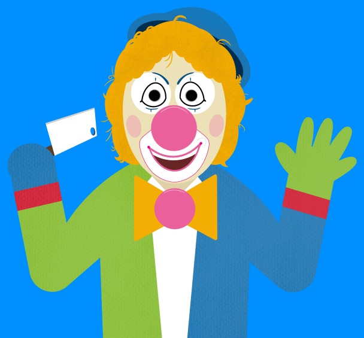

Still image from an episode of SCP-993: 'Bobble's Kitchen Surprise'
Item #: SCP-993
Object Class: Safe
Special Containment Procedures: Any broadcasts of SCP-993 are to be intercepted as detailed in Protocol Upsilon-Beta 3 and blocked from public viewing. All intercepted broadcasts are to be recorded and stored for future viewing. Any subjects used to view SCP-993 must be under the age of ten and are to be dosed with a Class A amnesiac after they have described the episode.
Viewing of SCP-993 must be authorized by three (3) Level 4 personnel.
Description: SCP-993 is a children's television program entitled "Bobble the Clown" which first began airing in ██/██/19██. SCP-993 seems to have been made in the style of an educational cartoon, with the primary plot of most episodes being the titular character, Bobble the Clown, learning a new skill or activity. The program appears to have no supporting cast and the setting of the program often changes between episodes.
SCP-993's anomalous properties become obvious when the program is viewed. Anyone watching aged ten years or older will immediately fall unconscious when the program begins and will remain incapacitated until the end of the program, later reporting a stabbing headache immediately before blacking out.
Children under the age of ten viewing SCP-993 later report that it teaches and advocates activities such as cannibalism, murder, torture, [DATA EXPUNGED]. These activities appear to become ingrained in the subject's mind; repeated exposure to SCP-993 can result in permanent psychotic and schizophrenic symptoms.
Episodes of SCP-993 are regularly broadcast from a currently unknown source, but since ██/██/20██, all broadcasts have been successfully intercepted using Protocol Upsilon-Beta 3 and blocked from public viewing.
| Episode Title |
Contents |
| 'Bobble's Kitchen Surprise' |
Setting of episode is a stereotypical small American town. In the episode, Bobble the Clown appears to kidnap one of the town's citizens and takes him to his home. Once there, Bobble the Clown informs the viewer on how to prepare human flesh for consumption, then proceeds to skin, gut and cook the citizen. |
| 'Bobble in the Big City' |
Setting of episode is a large American city, possibly New York. In the episode, Bobble the Clown instructs viewers on methods of lighting fires undetected, using resources such as mosquito coils. At the end of the episode, Bobble the Clown sets fire to a large building and leaves. The picture stays on the burning building for a further three minutes before the episode ends. Screams are audible during this time. |
| 'Bobble's Sneaky Saturday' |
Setting of episode appears to be London, as the Elizabeth Tower housing Big Ben is visible. In the episode, Bobble the Clown silently stalks a woman for most of the episode. When she arrives at her home, Bobble the Clown attacks and kills her with a large butcher knife. At the end of the episode, Bobble the Clown details methods of remaining unseen in crowded places. |
| 'Bobble Gets the Truth' |
Setting of episode appears to be a Prisoner of War camp. In the episode, Bobble the Clown tortures a captured soldier, repeatedly asking him nonsensical questions. The soldier eventually appears to die of his wounds. Bobble the Clown then details to the viewer how to inflict painful, but non-lethal injuries. |
| 'Bobble Hates You' |
Setting of episode appears to be a blank room. Bobble the Clown sits on a chair in the room staring angrily at the viewer for the full thirty minutes of the episode. |
| '[EXPLETIVE] YOU [EXPLETIVE] YOU [EXPLETIVE] YOU' |
Setting of the episode appears to be Site ██'s video archive, where recordings of SCP-993 are stored. In the episode, Bobble the Clown angrily details methods of breaching containment for several SCPs. Bobble then details methods to murder researchers involved in its containment, showing detailed knowledge of their daily routines and habits. Notably, what appears to be an animated version of Dr. ████ walks past Bobble halfway through the episode. A clock on the wall shows the time as ██:██ PM. Dr. ████ confirms that he was walking past SCP-993's archive at the time. |